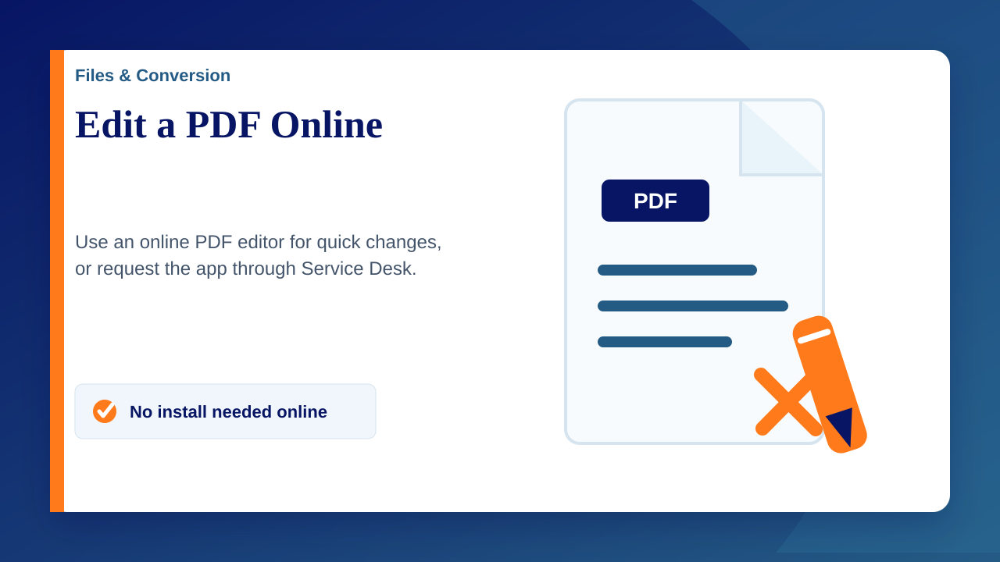

If you need to make a quick edit to a PDF, the online version of PDFgear works well and does not need to be installed on your computer.
Open PDFgear online: https://www.pdfgear.com/edit-pdf/
Editing a PDF online
- Open PDFgear Edit PDF.
- Upload the PDF you need to edit.
- Use the tools on the page to add or change text, highlight, annotate, sign, add pages or remove pages as needed.
- Download the updated PDF when you have finished.
Other PDF tools
PDFgear also includes other online tools, such as PDF to Word, compression, merging and splitting. Other PDF editing options can also be found by searching Google if PDFgear does not do exactly what you need.
If you want PDFgear installed
The online version does not require installation and is usually enough for quick edits. If you would like PDFgear installed on your school device, please go to the Service Desk and raise a ticket so IT can review and action the request.
Before uploading a file: only use online tools for documents you are allowed to upload to an external website. If you are unsure, raise a Service Desk ticket and ask IT for advice.